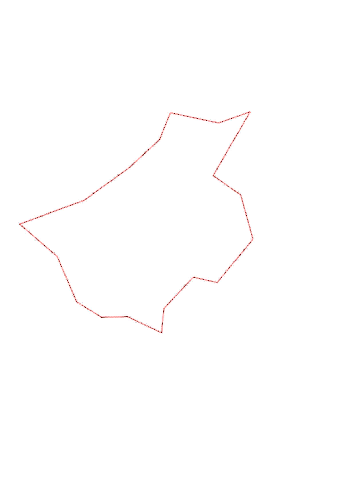
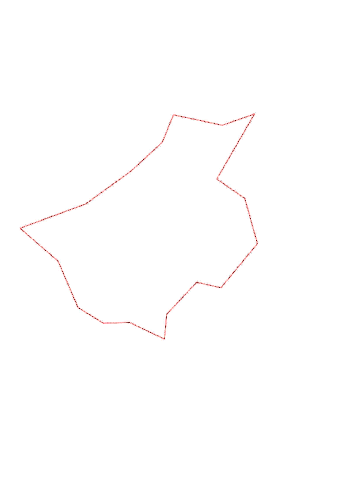

| Control |
Points |
Time Punched |
Distance |
Your Time |
Pace |
Place |
Fastest Time |
Median Time |
% Behind Fastest |
| 63 |
60 |
|
0.24 |
0:01:34 |
06:31 |
1 / 13 |
0:01:34 |
0:02:05 |
0% |
| 54 |
50 |
|
0.35 |
0:05:30 |
15:42 |
7 / 9 |
0:03:08 |
0:04:37 |
75% |
| 80 |
80 |
|
0.22 |
0:02:23 |
10:50 |
1 / 11 |
0:02:23 |
0:03:30 |
0% |
| 48 |
40 |
|
0.4 |
0:02:29 |
06:12 |
1 / 10 |
0:02:29 |
0:03:23 |
0% |
| 60 |
60 |
|
0.22 |
0:02:09 |
09:46 |
2 / 8 |
0:02:05 |
0:02:34 |
3% |
| 81 |
80 |
|
0.52 |
0:03:21 |
06:26 |
1 / 11 |
0:03:21 |
0:04:40 |
0% |
| 46 |
40 |
|
0.42 |
0:03:46 |
08:58 |
1 / 7 |
0:03:46 |
0:04:48 |
0% |
| 61 |
60 |
|
0.31 |
0:04:13 |
13:36 |
5 / 6 |
0:02:54 |
0:04:08 |
45% |
| 67 |
60 |
|
0.68 |
0:04:05 |
06:00 |
1 / 1 |
0:04:05 |
0:04:05 |
0% |
| 50 |
50 |
|
0.31 |
0:02:35 |
08:20 |
2 / 4 |
0:02:25 |
0:03:45 |
6% |
| 77 |
70 |
|
0.45 |
0:04:02 |
08:57 |
1 / 1 |
0:04:02 |
0:04:02 |
0% |
| 39 |
30 |
|
0.27 |
0:01:55 |
07:05 |
1 / 2 |
0:01:55 |
0:02:07 |
0% |
| 65 |
60 |
|
0.38 |
0:03:02 |
07:58 |
1 / 4 |
0:03:02 |
0:03:17 |
0% |
| 53 |
50 |
|
0.51 |
0:03:48 |
07:27 |
1 / 4 |
0:03:48 |
0:04:15 |
0% |
| 92 |
90 |
|
0.63 |
0:06:58 |
11:03 |
1 / 3 |
0:06:58 |
0:08:08 |
0% |
| 72 |
70 |
|
0.46 |
0:03:21 |
07:16 |
2 / 4 |
0:02:51 |
0:04:56 |
17% |
| 35 |
30 |
|
0.46 |
0:03:14 |
07:01 |
1 / 1 |
0:03:14 |
0:03:14 |
0% |
| Finish |
0 |
|
0.27 |
0:01:29 |
05:29 |
5 / 10 |
0:01:23 |
0:01:33 |
7% |
Total Distance Covered: 7.1km
Points Scored: 980
Late Penalty: 0
Final Score: 980
Total Time: 0hours 59minutes 54seconds
Efficiency: 138.03 points/km
 
